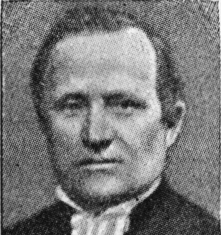

Carl Wilhelm Linder

Linder, Carl Vilhelm, filolog, teolog. Född d. 10 mars 1825 i Vists församling i Östergötlands län. Föräldrar: hemmansägaren Daniel Persson och Kristina Nilsdotter. — Student i Uppsala 1845, filosofie doktor 1851, docent i latin 1852, adjunkt i grekiska 1854 samt professor i samma ämne vid Lunds universitet 1859. L. upprättade tillsammans med professor Lysander 1866 i Lund ett filologiskt universitet, prästvigdes s. å. och utnämndes 1868 till domprost i Västerås. Hans mångsidiga duglighet blef för olika ändamål tagen i anspråk. 1873 och 1878 var L. representant för stiftet vid kyrkomötet samt 1875—78 landstingsman för Västerås stad och ordförande för stadsfullmäktige. 1876—78 riksdagsman i Andra kammaren för Västerås-Köping-Enköping och 1879—81 för Västerås-Köping, tillhörde L. landtmannapartiets utpräglade motståndare. Han var äfven 1865 ledamot af kommissionen för språkundervisningen, 1870—71 af kommittén för granskning af läroverksstadgan samt beklädde posten som ordförande eller vice ordförande vid fyra allmänna läraremöten. 1877 blef L. domprost i Linköping och teologie doktor. Död i Linköping d. 20 okt. 1882. — L. var äfven verksam som skriftställare. Han utgaf Om grekernas theater och skådespel 1865; Bidrag till grekiska språkets synonymik 1867; Om liturgiens betydelse i och för kulten inom den evangelisk-lutherska kyrkan 1871; latinska poem och festtal, akademiska afhandlingar, tidskriftsuppsatser, tillfällighetsvers på svenska, i förening med K. A. Walberg ett Svenskt-grekiskt lexikon 1862, m. m. — Gift 1854 med Anna Maria Ulrika Wallenberg.
Ur Svenskt biografiskt handlexikon, 2 uppl. (1906), bd 2, s. 72, efter faksimilet hos Project Runeberg. Rättat: Östergötlånds → Östergötlands, läroverkststadgan → läroverksstadgan, K. A. Wallberg → Walberg (tryckfel i förlagan).